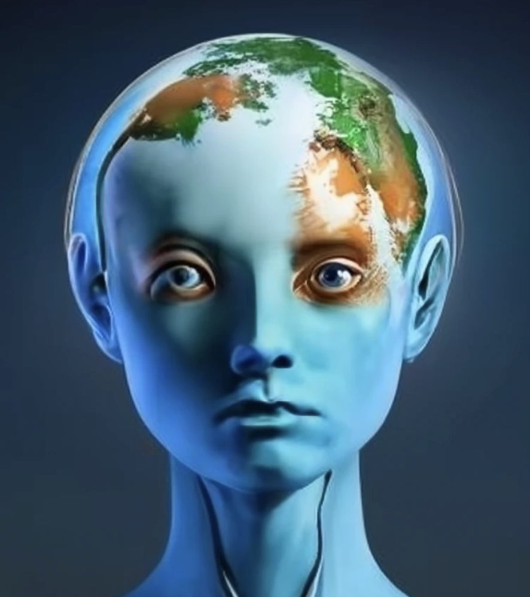
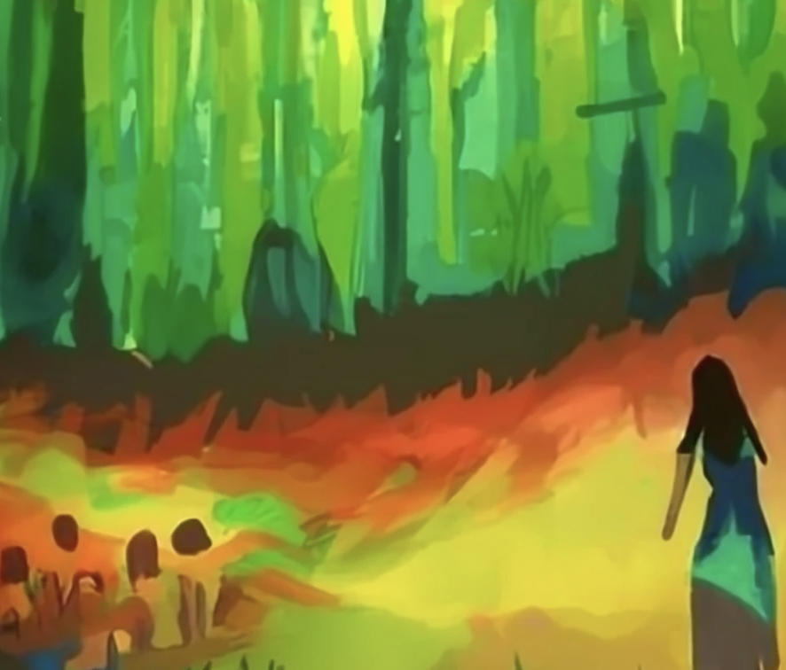

|  |
| More Cli-Fi Short Stories |
|---|

Short stories are a fanatistic vehicle for thinking about climate futures. They add personal, social, cultural, and political sophistication to scientific examination of impacts of global heating.
Additional Cli-Fi Short Stories online:
The University of Arizona has an Imagination and Climate Futurs Project that has had three climate fiction short stories and produced three excellent, free, and online volumes of climate fiction that they call Everything Change.
Grist Magazine has a beautiful collection of climate short stories in the 2024 Collection Imagine 2020.
The Writing Atlas has a good list of online climate change short stories.
Writers HQ recommends 7 online climate change stories.
10th graders at the School of Environmental Leadership have published their short stories online.
And going beyond online short stories, there are many fine print cli-fi short story authors and collection, see Morningside Center Some lists of longer climate fiction: the NY Public Library, Outside Magazine, and Goodreads.
For teaching cli-fi literature, a valuable resources is ClimateLit.org.
| Teaching Cli-Fi & Student Cli-Fi |
|---|
Here is the online syllabus for a course I taught in climate fiction. This course began with an introduction to the climate crisis (reading Mark Lynas' book Our Final Warning).
The course included cli-fi short stories, novels, poetry, rap, place-based creative non-ficion, cli-fi literary theory, articles about teaching cli-fi, and evaluation of climate action strategies. The poetry section explored a "new" form - the "necropastoral" that "registers human-kind’s ravaging impact on non-human species and environments." The syllabus is full of links to cli-fi literature and resources.
During the course my students experimented with cli-fi writing in many of these forms.
As students learned about the climate crisis and read cli-fi I had them keep a Writers Journal . This assignment offered different kinds of prompts to help student develop ideas for the climate literature that they might like to write. The cli-fi Writers Journal could easily be adpated to different courses and grade levels.
Feel free to cut and paste from any of my syllabi or assignments!
| Home | AI Writing | More Cli Fi Stories | About Us |